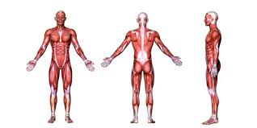

El sistema locomotor es la unión del aparato muscular y el aparato esquelético, los cuales están compuestos respectivamente por los casi 650 músculos de distinto tamaño y forma que permiten la movilización del cuerpo, y los 206 huesos también de diversa forma y tamaño que le dan soporte al cuerpo y le sirven de protección a los órganos internos.
Gracias a estos dos sistemas el cuerpo humano conserva su forma y postura, y además puede desplazarse o mover sus extremidades a voluntad, lo cual es indispensable para la vida.
